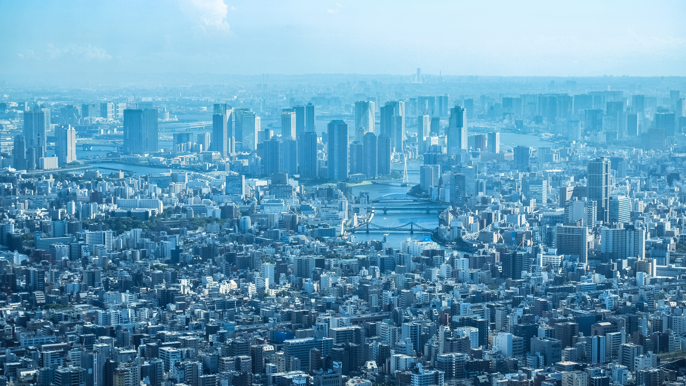

Tóquio: A Metrópole do Futuro no Coração do Japão
Tóquio, a capital do Japão, é uma das cidades mais vibrantes e futurísticas do mundo. Com uma mistura de tradição e inovação, essa metrópole fascinante atrai milhões de visitantes todos os anos. Nesta matéria, exploraremos as principais características de Tóquio, desde sua cultura única até sua tecnologia de ponta.

Uma Cidade de Contrastes
Tóquio é uma cidade onde o antigo e o moderno se entrelaçam de maneira única. No bairro de Asakusa, você pode encontrar o Templo Senso-ji, um dos templos budistas mais antigos de Tóquio, que remonta a mais de 1.300 anos. Enquanto isso, o bairro de Akihabara é o epicentro da cultura otaku e da tecnologia, repleto de lojas de eletrônicos e videogames.
A culinária de Tóquio é uma experiência inesquecível. Além dos famosos sushis e sashimis, a cidade oferece uma ampla variedade de pratos locais, como o ramen, o okonomiyaki e o takoyaki. Os mercados de peixe, como Tsukiji e Toyosu, são destinos populares para os amantes de frutos do mar frescos.
Arquitetura Moderna e Paisagens Urbanas
Tóquio é uma cidade conhecida por sua arquitetura única e paisagens urbanas impressionantes. O Tokyo Skytree, uma torre de transmissão, oferece vistas panorâmicas da cidade e é um exemplo perfeito da arquitetura contemporânea de Tóquio. A Torre de Tóquio, por sua vez, é um marco que combina elementos tradicionais com um toque moderno.
Tóquio é um lugar onde a arquitetura tradicional coexiste harmoniosamente com edifícios ultramodernos. Você pode encontrar templos históricos, como o Templo Senso-ji em Asakusa, situados ao lado de arranha-céus reluzentes.
Tóquio é famosa por seus impressionantes arranha-céus, muitos dos quais competem pelo título de "o mais alto". O Tokyo Skytree é uma torre de comunicação que se destaca na paisagem, e o distrito de Shinjuku é o lar de arranha-céus notáveis, como o Tokyo Metropolitan Government Building.
Tóquio está na vanguarda da tecnologia e da inovação na arquitetura. Muitos edifícios incorporam sistemas avançados de eficiência energética, materiais sustentáveis e design inteligente.
Devido à falta de espaço em Tóquio, os arquitetos frequentemente precisam projetar edifícios em espaços reduzidos. Isso levou a uma ênfase na otimização do espaço, resultando em designs inteligentes e inovadores que aproveitam ao máximo cada metro quadrado.
Os edifícios de pachinko parlors em Tóquio são um exemplo peculiar da arquitetura da cidade. Esses locais de entretenimento são famosos por suas fachadas brilhantes, que apresentam jogos de luzes piscantes e cores vibrantes.
Além do concreto e do aço, você também encontrará exemplos notáveis de arquitetura tradicional japonesa em madeira e palha em Tóquio. Alguns restaurantes, templos e residências mantêm essas técnicas de construção antigas vivas.
Cada bairro de Tóquio tem seu próprio estilo arquitetônico distintivo. Por exemplo, Ginza é famosa por sua arquitetura contemporânea e lojas de luxo, enquanto Yanaka preserva um ambiente mais antigo e tradicional.
Tóquio também é conhecida por seus espaços públicos inovadores. O cruzamento de Shibuya é um exemplo, onde pedestres de todas as direções se encontram em uma dança caótica e coordenada.
Tóquio à Noite: Uma Jornada Pela Vida Noturna da Metrópole Japonesa
Tóquio, a metrópole do futuro, é igualmente espetacular quando o sol se põe. A vida noturna da cidade é uma experiência inigualável, repleta de uma variedade incrível de atividades e opções de entretenimento. Nesta redação, exploraremos as maravilhas da vida noturna de Tóquio, revelando por que esta cidade é um dos destinos mais emocionantes do mundo após o anoitecer.
Illuminação e Neon: Quando a noite cai, Tóquio se transforma em um caleidoscópio de cores. Os enormes letreiros de neon, espalhados por distritos como Shibuya e Shinjuku, transformam a cidade em um cenário futurista. O cruzamento de Shibuya é especialmente impressionante, com milhares de pessoas atravessando a rua, enquanto as fachadas brilhantes das lojas piscam e brilham.
Bares e Izakayas: A cena de bares e izakayas (bares japoneses) de Tóquio é efervescente e diversificada. Desde bares de coquetéis elegantes e secretos até pequenas tavernas que oferecem saquê e petiscos deliciosos, você encontrará um local para cada gosto. O Golden Gai, em Shinjuku, é um labirinto de becos estreitos cheios de pequenos bares, cada um com sua própria atmosfera única
Clubes Noturnos: Tóquio é um paraíso para os amantes da música eletrônica e da vida noturna dançante. Os clubes noturnos, como o famoso AgeHa, apresentam DJs de renome internacional e sistemas de som de última geração, criando uma experiência de festa inesquecível.
Karaokês: Os karaokês são uma parte fundamental da vida noturna de Tóquio. Você pode alugar uma sala privativa com amigos e soltar a voz até o amanhecer. Muitos karaokês oferecem um menu completo de bebidas e comida, tornando a experiência ainda mais animada.Tóquio é famosa por seus estandes de yakitori (espetinhos grelhados) que surgem em muitas ruas durante a noite. É uma maneira saborosa e econômica de experimentar a culinária local enquanto socializa com os moradores locais. lém dos bares e clubes, Tóquio oferece uma ampla gama de atividades culturais noturnas. Você pode assistir a peças de teatro kabuki ou espetáculos de taiko (tambores japoneses) tradicionais, que dão uma visão profunda da cultura japonesa.
Alguns templos em Tóquio são iluminados à noite, criando uma atmosfera mágica e serena. O Templo Senso-ji em Asakusa é particularmente impressionante durante as noites iluminadas. A vida noturna de Tóquio é conhecida por sua segurança e eficiência. Os sistemas de transporte público funcionam até tarde, o que permite que os visitantes se locomovam com facilidade durante a noite.
A vida noturna de Tóquio é um espetáculo em si, uma experiência cativante que combina tradição e modernidade, iluminação brilhante e cultura vibrante. A cidade oferece algo para todos, desde os amantes de música eletrônica até aqueles que preferem uma noite tranquila em um bar de saquê. Tóquio à noite é uma jornada que todos os visitantes devem experimentar, e é um testemunho da energia inigualável desta metrópole que nunca dorme.